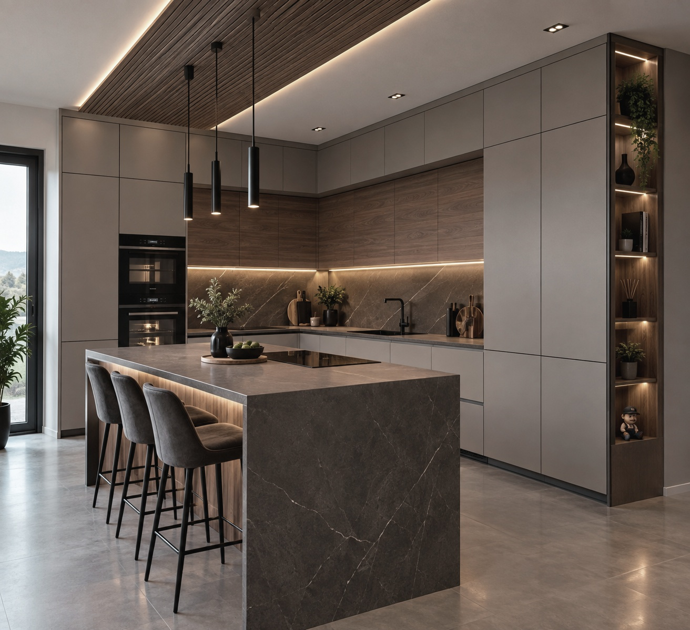

Fronta Design · Slavonski Brod

Radimo u Slavonskom Brodu i okolici: kuhinje, ugradbeni ormari i garderobe, dnevne sobe, spavaće sobe te dječje i radne sobe. Dolazimo na izmjeru, predlažemo raspored i materijale, izrađujemo i montiramo do zadnjeg detalja. Bez katalogâ i tipskih dimenzija — svaki element nastaje prema vašim zidovima, navikama i svjetlu u prostoru.
Zatražite ponudu →O nama
Fronta design projektira i izrađuje namještaj po mjeri za domove u Slavonskom Brodu i okolici — kuhinje, ugradbene ormare te dnevne i spavaće prostore. Svaki komad nastaje u našoj radionici i montiramo ga sami, bez podizvođača, prilagođen točno vašem prostoru, navikama i budžetu.
Kontakt
Pošaljite nekoliko rečenica o prostoru — tip namještaja, približne dimenzije i rok. Odgovaramo u roku od dva radna dana i dogovaramo izmjeru na adresi.
Telefon
097 6113 362Adresa
Ulica Tadije Smičiklasa 47, 35000 Slavonski Brod
Radno vrijeme
Ponedjeljak – petak, dogovor po pozivu. Subota i nedjelja zatvoreno.
Javljamo se na kontakt koji ste ostavili u roku od dva radna dana.
Pravno
Osobne podatke koje unesete u kontaktnu formu na ovoj stranici — ime i prezime, e-mail ili telefon te sadržaj poruke — prikupljamo isključivo radi odgovora na vaš upit.
Poruka se dostavlja na e-mail adresu tvrtke Fronta design j.d.o.o. Za tehničku dostavu koristimo servis Web3Forms, koji poruku samo prosljeđuje i ne koristi je u vlastite svrhe. Osim toga, podatke ne dijelimo s trećim stranama i ne koristimo ih za marketing ni newsletter.
Podatke čuvamo onoliko dugo koliko je potrebno za rješavanje vašeg upita. Za uvid, ispravak ili brisanje svojih podataka javite se na 097 6113 362 ili na adresu Ulica Tadije Smičiklasa 47, 35000 Slavonski Brod.
Stranica ne postavlja kolačiće i ne koristi alate za analitiku ni praćenje posjetitelja.